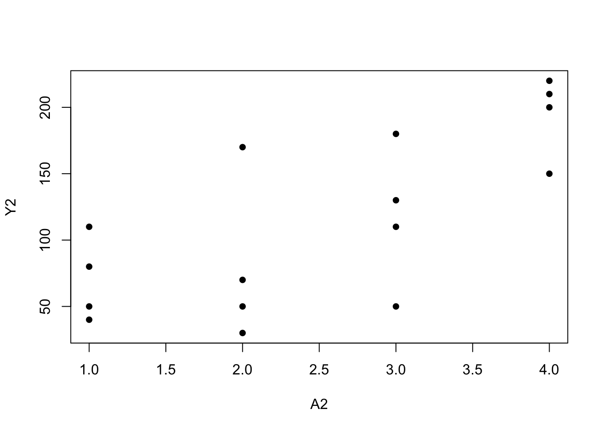

11. Why model?
Some concepts and points
Estimand
Estimator
We can not always let the data “speak for themselves” to obtain a meaningful estimate. Rather, we often need to supplement the data with a model.
What is a model? A model is defined by an a priori restriction on the joint distribution of the data.
When using a parametric model, the inferences are correct only if the restrictions encoded in the model are correct, i.e., if the model is correctly specified. Thus model-based causal inference relies on conditions of no model misspecification.
Fisher consistency: An estimator of a population quantity that, when calculated using the entire population rather than a sample, yields the true value of the population parameter.
Bias-variance trade-off
Program 11.1
- Sample averages by treatment level
- Data from Figures 11.1 and 11.2
A<-c(rep(1, 8), rep(0, 8))
Y <- c(200, 150, 220, 110, 50, 180, 90, 170, 170, 30, 70, 110, 80, 50, 10, 20)
plot(A, Y, pch=16)
mean(Y[A == 0])## [1] 67.5mean(Y[A == 1])## [1] 146A2<-c(rep(1,4), rep(2, 4), rep(3, 4), rep(4,4))
Y2 <- c(110, 80, 50, 40, 170, 30, 70, 50, 110, 50, 180, 130, 200, 150, 220, 210)
plot(A2, Y2, pch=16)
mean(Y2[A2 == 1])## [1] 70mean(Y2[A2 == 2])## [1] 80mean(Y2[A2 == 3])## [1] 118mean(Y2[A2 == 4])## [1] 195Program 11.2
- 2-parameter linear model
- Data from Figures 11.3 and 11.1
A3 <-c(3, 11, 17, 23, 29, 37, 41, 53, 67, 79, 83, 97, 60, 71, 15, 45)
Y3 <-c(21, 54, 33, 101, 85, 65, 157, 120, 111, 200, 140, 220, 230, 217, 11, 190)
plot(Y3 ~ A3, pch=16)
summary(glm(Y3 ~ A3))##
## Call:
## glm(formula = Y3 ~ A3)
##
## Deviance Residuals:
## Min 1Q Median 3Q Max
## -61.93 -30.56 -5.74 30.65 77.22
##
## Coefficients:
## Estimate Std. Error t value Pr(>|t|)
## (Intercept) 24.55 21.33 1.15 0.2691
## A3 2.14 0.40 5.35 0.0001 ***
## ---
## Signif. codes: 0 '***' 0.001 '**' 0.01 '*' 0.05 '.' 0.1 ' ' 1
##
## (Dispersion parameter for gaussian family taken to be 1944)
##
## Null deviance: 82800 on 15 degrees of freedom
## Residual deviance: 27218 on 14 degrees of freedom
## AIC: 170.4
##
## Number of Fisher Scoring iterations: 2predict(glm(Y3 ~ A3), data.frame(A3 = 90))## 1
## 217summary(glm(Y ~ A))##
## Call:
## glm(formula = Y ~ A)
##
## Deviance Residuals:
## Min 1Q Median 3Q Max
## -96.25 -40.00 3.12 35.94 102.50
##
## Coefficients:
## Estimate Std. Error t value Pr(>|t|)
## (Intercept) 67.5 19.7 3.42 0.0041 **
## A 78.8 27.9 2.82 0.0135 *
## ---
## Signif. codes: 0 '***' 0.001 '**' 0.01 '*' 0.05 '.' 0.1 ' ' 1
##
## (Dispersion parameter for gaussian family taken to be 3110)
##
## Null deviance: 68344 on 15 degrees of freedom
## Residual deviance: 43538 on 14 degrees of freedom
## AIC: 177.9
##
## Number of Fisher Scoring iterations: 2Program 11.3
- 3-parameter linear model: \(E(Y|A)=\theta_0+\theta_{1}A+\theta_{2}A^2\), where \(A^2=A\times A\)
- Data from Figure 11.3
Asq <- A3 * A3
mod3 <- glm(Y3 ~ A3 + Asq)
summary(mod3)##
## Call:
## glm(formula = Y3 ~ A3 + Asq)
##
## Deviance Residuals:
## Min 1Q Median 3Q Max
## -65.3 -34.4 13.2 26.1 64.4
##
## Coefficients:
## Estimate Std. Error t value Pr(>|t|)
## (Intercept) -7.4069 31.7478 -0.23 0.819
## A3 4.1072 1.5309 2.68 0.019 *
## Asq -0.0204 0.0153 -1.33 0.206
## ---
## Signif. codes: 0 '***' 0.001 '**' 0.01 '*' 0.05 '.' 0.1 ' ' 1
##
## (Dispersion parameter for gaussian family taken to be 1843)
##
## Null deviance: 82800 on 15 degrees of freedom
## Residual deviance: 23955 on 13 degrees of freedom
## AIC: 170.4
##
## Number of Fisher Scoring iterations: 2predict(mod3, data.frame(cbind(A3 = 90, Asq = 8100)))## 1
## 197